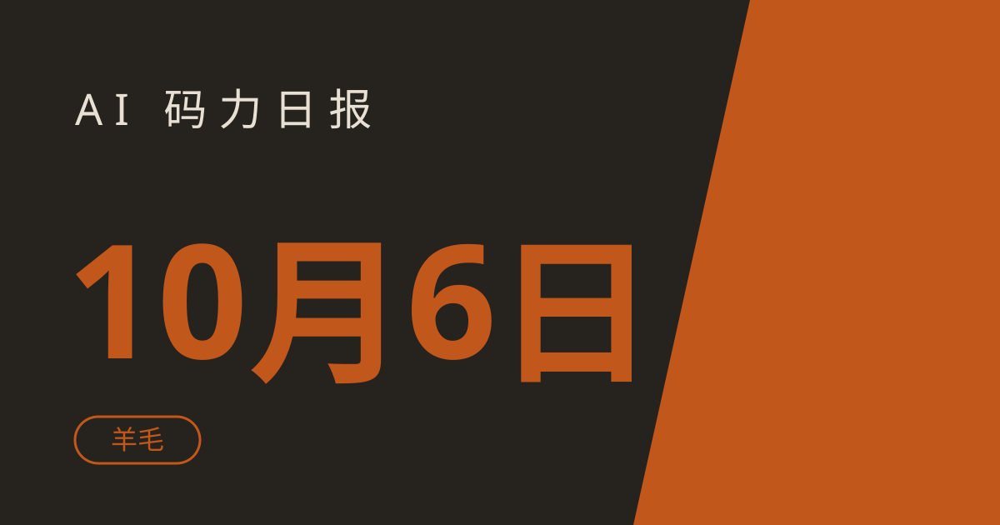

AI 码力日报 · 2026年10月6日

⚡ 一句话速览
- OpenAI DevDay 2026（10月1日）发布了面向开发者的工具矩阵：Codex 上云、Code Review 自动初审、GPT-6.1 Sol（约 1/5 价格打 agentic coding）、Agents API 支持 computer use，本周各路复盘正在发酵。
- Claude Code 云会话额度后天截止领取：Pro 送 $100、Max 送 $250，只能花在 cloud sessions 上，北京时间 10 月 8 日 15:59 截止。
- 智谱 ZCode 全员 1 亿 GLM-5.3-Flash token 明天结束：每天 10 万份，10 月 7 日收官。
- GitHub Trending 今日榜被 Agent 工具刷屏：claude-mem（跨会话记忆）、Agent-Reach（一键给 Agent 装上网能力）等 4 个项目值得一看。
🤖 今日 AI Coding 动态
OpenAI DevDay 2026：开发者工具矩阵发布，本周进入复盘期
DevDay 是 10 月 1 日（旧金山时间，北京时间 10 月 2 日）开的，但这几天各家深度复盘刚出来，值得翻一翻。这次几乎是清一色的 coding 弹药：Codex 上云（手机或云端跑 coding 任务，关机也不停）、Code Review 自动做 PR 初审、Codex Security Cloud 定时扫仓库给修复方案、GPT-6.1 Sol（官方说接近 Astra 的智能水平、价格约 1/5，主打 agentic coding）、Agents API 支持 computer use（托管 agent 直接操作软件 GUI）、Ultrafast 推理加速（API 提速约 8 倍、Codex 最高 300 tokens/秒）。订阅侧也有动作：Pro 档出现了 $100/$200/$500 三档，$500/月的 Pro 500 独占 Astra Ultrafast 和 Agents API computer use。开发者侧汇总 / 20+ 发布复盘，含订阅涨价细节 / 10月5日"传闻核验"篇（链接截至撰写时可访问）
一句话点评：这是 OpenAI 把"agent 写代码"从 demo 推向生产管线的一次总攻，尤其 Code Review 和 Security Cloud 两块，直接冲着团队日常流程去的。不过国内朋友注意：OpenAI 服务国内不可直接用，需要特殊网络，订阅也要国际支付方式；GPT-6.1 Sol 目前在 API 和付费 Work/Codex 计划可用，ChatGPT 内置接入还没到。
Claude Code 2.1.289：安全修补，deny 规则终于能压住第三方 Mod
10 月 4 日（北京时间）发布的版本，核心是安全修补。背景是 10 月 1 日刚上线的 Claude Mods——TypeScript 写的插件，可以改写 prompt、拦截/重试工具调用、甚至改 UI（连内置 /diff 都变成了一个 mod）。能力大，但 Anthropic 自己都警告 mod 和 Claude Code 本体同权限、不隔离。这次修补了两处真漏洞：deny/ask 规则现在能压住用户装的 Mod（之前嵌套复合 shell 命令里 Mod 的"批准"会覆盖 deny 规则）；修复了通过 symlink 的 @-mention/改动文件绕过 Read deny 规则的漏洞；还回滚了 2.1.288 里导致 VS Code 频繁登出的 claude auth status 改动。changelog 解析 / 本周 2.1.284~2.1.289 汇总，另含 Sonnet 5.5 成为 API 默认 Sonnet 模型、价格不变 $2/$10 per MTok（链接截至撰写时可访问）
我的看法：企业托管设备上装了第三方 mod 的团队，这版建议尽快升。个人用户记住一条就行——Mod 机制下只装可信来源的插件，装之前先看它声明了哪些调用。
GitHub Copilot「Computer Use」进入公开预览，Agent 开始操作桌面
GitHub 宣布 Copilot 可以直接操作桌面应用了：在 Copilot CLI 和 Copilot App（macOS/Windows）里能看屏幕、点控件、输入、滚动、跨窗口协作，覆盖那些没有 API/CLI/MCP 的老旧 GUI 软件。功能默认关闭、审批门控，组织管理员可以统一禁用。有意思的是这是和 OpenAI Agents API computer use 同一周的两大"agent 操作桌面"动作，两家想到一块去了。10月3日上手指南 / 功能解析（链接截至撰写时可访问）
适合谁：被困在无 API 遗留系统、报表/发票流程里的开发者，这功能就是给你准备的。提醒一句：computer use 涉及桌面权限，敏感环境建议先在测试机上开。
🐑 今日羊毛
Claude Code 云会话额度：Pro 送 $100 / Max 送 $250 —— 后天截止，快领！
一句话：Anthropic 官方一次性发放的 cloud sessions 额度，只能花在跑在 Anthropic 服务器上的云会话任务里（关掉电脑也不停），不能用于本地 Claude Code、聊天或 Cowork。
- 怎么薅（四选一，任一步都行）：① claude.ai → 左下角点自己的名字 → Settings → Usage → 顶部横幅点 Claim credit；② 终端里跑
claude然后输入/claim-credit；③ 开启 cloud session 时会自动抵扣。注意 cloud session 需要先连好 GitHub 授权。领取实测截图 / BleepingComputer 报道（官方帮助文档见 support.claude.com "Cloud sessions bonus credit promotion"） - 有效期：领取截止北京时间 10 月 8 日 15:59，过期不候；领到的额度用完或 11 月 5 日 15:59 过期
- 适合谁：9 月 23 日起就有个人 Pro / Max 订阅的人（Team、企业、免费试用不符合）
- 约省：Pro 约省 ¥720，Max 约省 ¥1800（按汇率约 7.2 折算，截至撰写时）
智谱 ZCode：全员送 1 亿 GLM-5.3-Flash token —— 明天是最后一天！
一句话：智谱针对 ZCode 数据上传风波的官方补偿方案，9 月 28 日—10 月 7 日面向全体用户，每天发放 10 万份、每份 1 亿 GLM-5.3-Flash token 额度（付费用户还有 8 张额度重置卡，有效期一个月）。
- 怎么薅：① 下载/升级最新版 ZCode 客户端；② 登录账号，在额度页面找到活动入口领取；③ 到账后在「使用统计 / 套餐」页面查看。每天 10 万份，先到先得。多方报道
- 有效期：到 10 月 7 日结束，明天收官，过期不候
- 适合谁：写代码、用 AI 编程 Agent 的用户都行
- 约省：约省 ¥150（按 GLM-5.3-Flash API 输出价 $0.25/百万 token 折算 1 亿 tokens，报道中披露的定价，截至撰写时）
阶跃星辰 Step Plan：最高免费用 75 天，国产新模型随便玩
一句话：阶跃星辰官方送 Step Plan 订阅时长，能直接调用刚发布的新旗舰 Step 5 Preview（600B 参数 MoE、100 万 token 上下文），还有 Step 3.7 Flash、StepAudio 3 等模型。Step Plan 能接到 WorkBuddy、千问办公等第三方客户端的自定义模型里用，不用装客户端。
- 怎么薅：① 进阶跃星辰开放平台注册登录 → 先送 15 天；② 完成第一次模型调用 → 再送 15 天；③ 复制邀请链接，每邀请 1 位好友再加 15 天（最多 3 人，共 45 天）。合计最高 75 天，懒得拉人也能先拿 30 天。快科技/新浪科技报道 / AI 星球实测
- 有效期：公开页面无明确截止，活动页面仍在发放中（截至撰写时），先领先安心
- 适合谁：想低成本体验国产新模型的开发者、Agent 玩家；新用户还有注册送 99 元套餐
- 约省：约省 ¥99（新用户注册套餐明确标价 99 元）
豆包工作：全员再送 30 天订阅，零门槛
一句话：豆包工作电脑版第二轮 30 天订阅免费发，所有用户都能领——之前领过上一轮（8 月 25 日）的用户也能继续拿，已付费用户的权益自动往后顺延，全程带高峰期优先权益。
- 怎么薅：① 下载或升级到最新版豆包工作电脑版；② 登录豆包账号，按客户端里的活动提示领取；③ 设置 → 订阅与额度管理 → 订阅记录 可查新的到期时间。界面新闻报道 / 人人都是产品经理盘点
- 有效期：这轮到 10 月 17 日左右收口，领完往后延 30 天（截至撰写时）
- 适合谁：所有用豆包工作电脑版的人，零门槛
- 约省：约省 ¥68（按豆包标准版连续包月 68 元定价，研报披露的官方价格）
⭐ 今日 GitHub 热门项目
thedotmack/claude-mem
给 AI 编程 Agent 用的跨会话持久化记忆系统：记录每个会话中 Agent 的行为，用 AI 压缩成语义摘要，注入到未来会话里。解决什么问题：Claude Code / Codex / Cursor 等 Agent 每次新会话都"失忆"，项目上下文和过往决策全丢；它通过 lifecycle hooks 自动捕捉工具使用观察，本地 SQLite + Chroma 向量混合检索，让 Agent 记住以前踩过的坑。⭐ 约 96,618（截至撰写时）。适合：重度用 Claude Code、Codex、Cursor 做开发的程序员。项目地址
Panniantong/Agent-Reach
一个 CLI 给 AI Agent 一键装上互联网能力：读推特、搜 Reddit、抓 YouTube 字幕、搜 B 站、看小红书，全部免费、无需 API 费用。解决什么问题：Agent 本地能写代码但上不了网——Twitter API 要付费、Reddit 匿名接口被封、平台反爬各自为战；它按平台维护"首选+备选"多后端路由和体检（agent-reach doctor），一条命令给 Agent 装好环境。⭐ 约 91,858（截至撰写时）。适合：需要让 Agent 联网搜资料、做调研、监控社区讨论的开发者。提醒：README 顶部有赞助商广告区块，项目本身是 MIT 开源真实项目，用的时候只看功能部分。项目地址
earthtojake/text-to-cad
给 AI Agent 的 CAD 超能力插件：用自然语言让 Agent 本地生成 3D 模型（STEP/GLB/STL/3MF），附带可制造性检查和工程图纸。解决什么问题：Agent 擅长写代码但不会画 CAD；它通过 cadgen 本地内核 + MCP/skills，把 Agent 变成能建模、出图、对接 3D 打印/CNC 制造服务的"机械工程师"。⭐ 约 17,388（截至撰写时）。适合：做硬件、机器人、3D 打印、创客项目，又想用 AI Agent 辅助设计的开发者。项目地址
tester-army/e2e
新一代 AI 驱动的端到端测试框架：用自然语言描述测试目标，Agent 自动操作 Web/移动应用完成，首次运行后会回放动作节省模型调用。解决什么问题：传统 e2e 测试脚本脆弱、维护成本高；它把自然语言步骤（agent.act / agent.assert）和 Playwright 定位器断言结合在同一个测试里，没有 Agent 步骤的测试完全不需要模型。⭐ 约 4,738（截至撰写时）。适合：前端/移动端开发者、QA，想用 AI 降低 e2e 测试维护成本的团队。项目地址
🛠️ 值得一试的工具：Modaal
是什么：一个面向原生移动开发的 AI agent 工作台。描述产品想法后，agent 会先写 PRD 并输出你审批过的计划，再逐个功能实现；产出是真正的 Xcode 工程 + Git 仓库，不是网页套壳。
解决什么痛点：现在的 AI 建站/建应用工具只给 Web 或 iOS 单端套壳，想同时做 iPhone 和 Android 还要真原生性能，就得自己写两遍。Modaal 的核心差异是"一份业务逻辑，两个 100% 原生 UI"：Swift/SwiftUI 写 iPhone 端，Kotlin/Compose 写 Android 端，共用一套开源 Duet 框架，构建时用同一批 fixture 校验两端行为一致。
免费额度：免费计划，无需绑卡；自带你已有的 Claude/ChatGPT/Cursor 订阅（共 13 种 agent），不加价抽模型 token。官网 / Product Hunt 页
verdict：值得试 —— 免费试错成本为零，代码可随时导出到 Xcode/Android Studio 不被锁死；Android 端还在 open beta、第三方评测还少，所以定位是"先白嫖试试，不急着上生产"。
🎓 3 分钟小教程：给 Claude Code 装一个「密钥脱敏 Mod」，让 AI 永远看不到你的密钥
上周 Anthropic 刚上线 Mods（TypeScript 写的插件，可以介入 tool call 前后），有人已经拿它做了个很实用的东西：密钥脱敏。原理是监听 tool.call 事件（Bash、Read），工具执行完、结果返回给 Claude 之前，把匹配到的密钥全替换成 [REDACTED]。
前置条件：Claude Code v2.1.287 或更高（claude --version 检查）
- 建插件目录
redact-secrets/，含三个文件： .claude-plugin/plugin.json：插件名/版本/描述hooks/hooks.json：声明 modules 指向./register.tshooks/register.ts：核心代码，监听tool.call事件，让工具先执行，拿到结果后把 OpenAI/Anthropic 密钥（sk-...）、AWS Key（AKIA...）、GitHub token（gh[pousr]_...）、私钥块正则匹配到的内容全部替换成[REDACTED]，再返回给 Claude- 本地验证，不用起会话：
cd redact-secrets claude plugin validate . claude plugin test - 真实会话试运行（用假密钥文件
fake.env确认脱敏生效）：claude -p "Use the Bash tool to run exactly: cat fake.env Then reply with the tool output verbatim, nothing else." \ --plugin-dir ./redact-secrets --allowedTools "Bash(cat:*)" --model haiku
预期效果：Claude 执行 cat .env 后收到的是 OPENAI_API_KEY=<redacted>，真密钥从没进过模型上下文。
两点实测踩坑提醒（原文作者总结的，我觉得有必要转达）：只覆盖 Bash/Read，走 Grep、网页抓取、MCP 的密钥脱敏不到；而且 Mod 运行时权限和你本人一样，不是沙盒——装别人的 Mod 前先 claude plugin validate 看它声明了哪些调用。原文教程
数据截至撰写时，仅供参考。